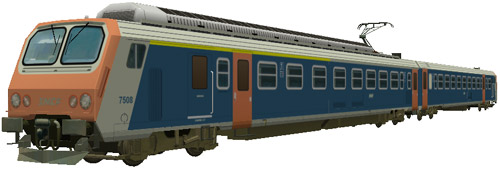
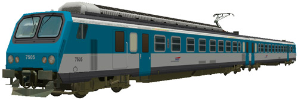
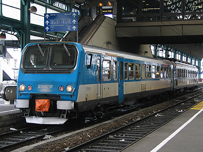
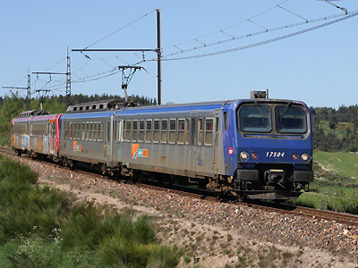
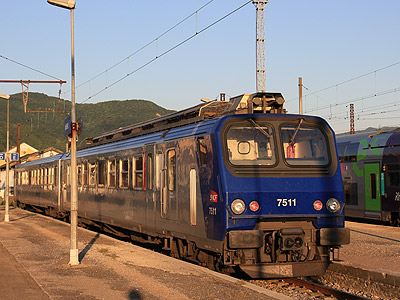

La Z 7500 version 
S. Froger a réalisé un pack de Z2 comportant les Z 7508 en livrée d'origine et Z 7505 TER PACA.

Ferrovia - 25 Octobre 2012
Z 7500
Z2 Express 1,5kV continu
Les Z 7500 sont des éléments automoteurs monocourants 1,5kV continu à deux caisses conçus pour les services régionaux Express et construits à 15 exemplaires de 1982 à 1984. Elles sont en service en Rhône Alpes, Languedoc-Roussillon et Poitou-Charentes.
La composition de l'élément est la Z 7500 proprement dite (motrice à adhérence totale à quatre moteurs) et une ZR 17500.
Elles peuvent fonctionner en unités multiples jusqu'à quatre éléments entres elles et avec les Z 7300, Z 9500 et Z 9600 qui composent le parc des "Z2".
Quelques données techniques
Constructeur : Francorail-ANF
Tension d'alimentation : continu 1,5 kV
Chaîne de traction : Rhéostat
Motorisation : 2 moteurs à courant continu par bogie, 2 bogies moteurs sur la motrice.
Puissance totale : 1275 kW
Longueur : 50,2m
Masse : 107t
Pour plus d'info :
La fiche Z 7500 sur Wikipedia
Fiche technique des Z 7500 de Florent Brisou
L'inventaire des Z 7500 sur Trains du Sud-Ouest

La Z 7515 à Lyon Perrache (03/02/2003)

La Z 7504 Languedoc-Roussillon à Aumont-Aubrac (16/05/2009)

La Z 7511 Rhône Alpes à Ambérieu (02/07/2011)
La Z 7500 version 
S. Froger a réalisé un pack de Z2 comportant les Z 7508 en livrée d'origine et Z 7505 TER PACA.